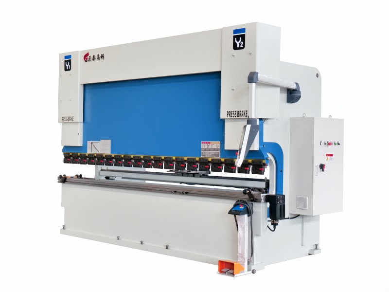

← Back to all products

Bending Machines
Torsion-Bar CNC Press Brake
A proven, cost-effective solution for everyday bending. The mechanical torsion bar keeps both cylinders moving in sync through a simple, rugged linkage — fewer electronics, fewer worries. It is the ideal first CNC press brake for growing workshops, steel structure shops and general fabrication businesses that need dependable performance at an attractive price.
- Robust mechanical torsion-bar synchronization — simple and durable
- Lower investment and lower maintenance cost than full-servo models
- NC/CNC controller options with digital back-gauge positioning
- Motorized back gauge (X axis) with manual fine adjustment
- Strong welded frame, annealed for stability under load
- Wide tonnage and length options; custom tooling available
💰 Factory-direct pricing — final price depends on tonnage, bending length and controller. Send your requirements and get an exact quote within 24 hours.
Or call us directly: +86 139 1293 6005 (Mr. Huang)